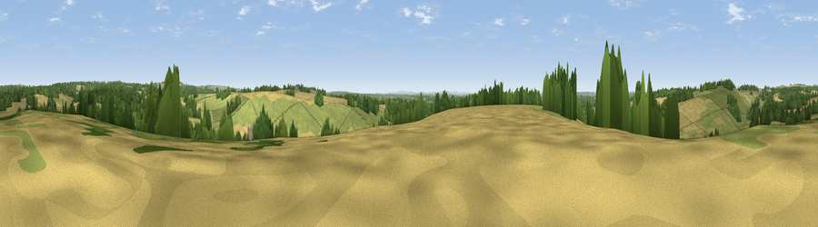

White Hill
#26134 in England · top 31% of its area beats it · near UphamWhere it is
The exact computed spot (SU 54351 21223). Click the marker for map links.
The view, rendered

A 360° render of this exact spot computed from the terrain model, tree cover and land cover — summer colours, afternoon light, calibrated against photographs of famous viewpoints. Real trees, hedges and buildings will differ in detail.
The panorama
Grey silhouette: terrain skyline in each direction (720 bearings, Earth curvature and refraction included). Dashed green: skyline with trees (+15 m) and buildings (+8 m) as obstacles. Blue strip: how far the ground is visible on each bearing.
Where the view opens
Wedge length = distance to the farthest visible ground on that bearing (vegetation-aware). Rings at 10, 25 and 50 km.
What fills the view
42% grassland · 37% cropland · 21% woodland · 1% built-up
Angular shares of the visible panorama (visual magnitude), not map area. Landscape diversity 0.49 (0–1 Shannon).
Key numbers
More beautiful places nearby
The staircase of upgrades: each row has a higher view potential than everything closer. Driving times are estimates from straight-line distance, calibrated against real road routing — check an actual route before setting out.
| Place | Direction | Drive | Score |
|---|---|---|---|
| Viewpoint near Upham | ESE · 1 km | ~3 min | 47.7 |
| Viewpoint near Owslebury | NW · 2 km | ~5 min | 52.3 |
| Viewpoint near Cheriton | NE · 5 km | ~10 min | 54.9 |
| Viewpoint near Cheriton | N · 5 km | ~11 min | 58.2 |
| Viewpoint near Droxford | ESE · 6 km | ~13 min | 61.7 |
| Beacon Hill | ENE · 6 km | ~13 min | 71.7 |
| Viewpoint near Meonstoke | E · 10 km | ~19 min | 74.8 |
| Viewpoint near Buriton | E · 17 km | ~30 min | 75.3 |
50.98785, -1.22703 · source: dobih hill · position refined by local search. Computed location — check access rights before visiting.